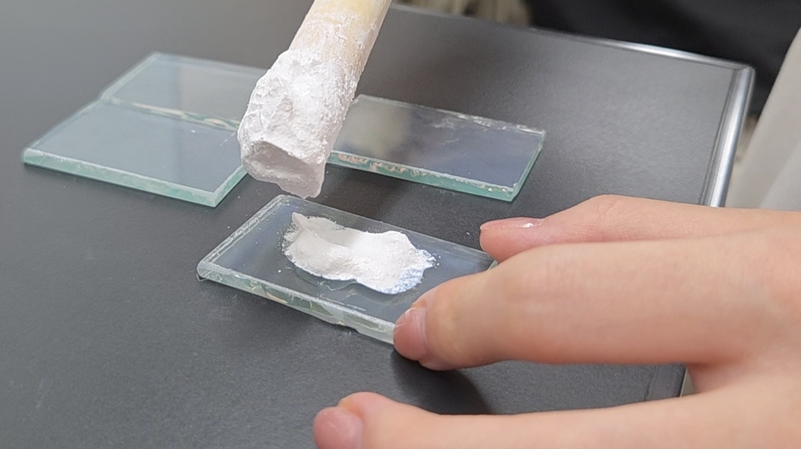
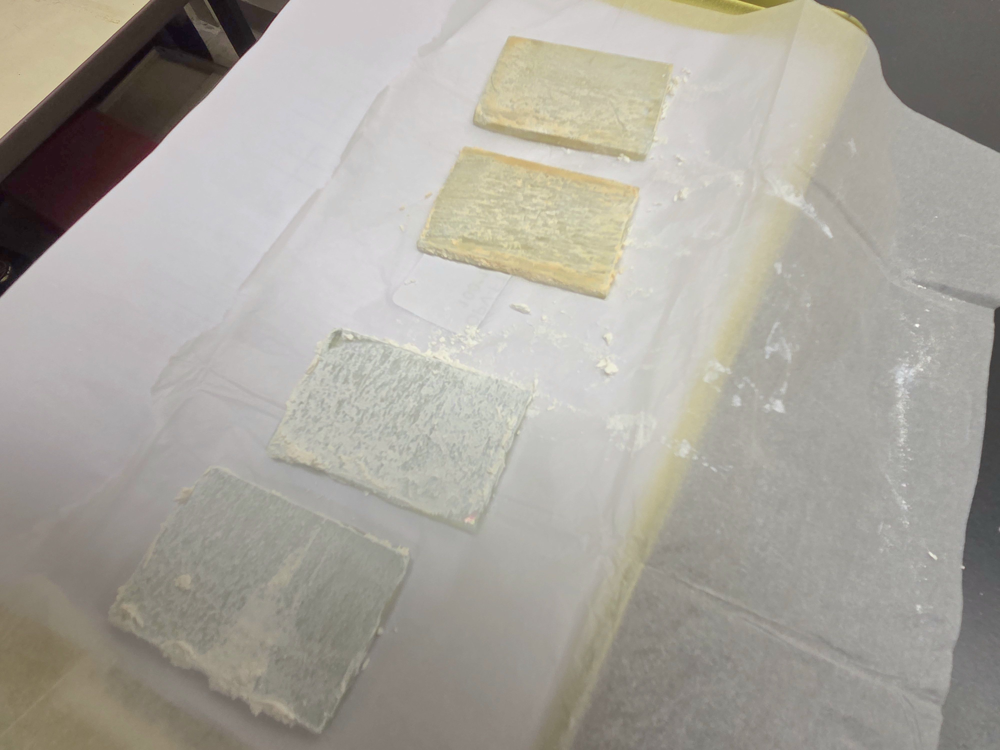
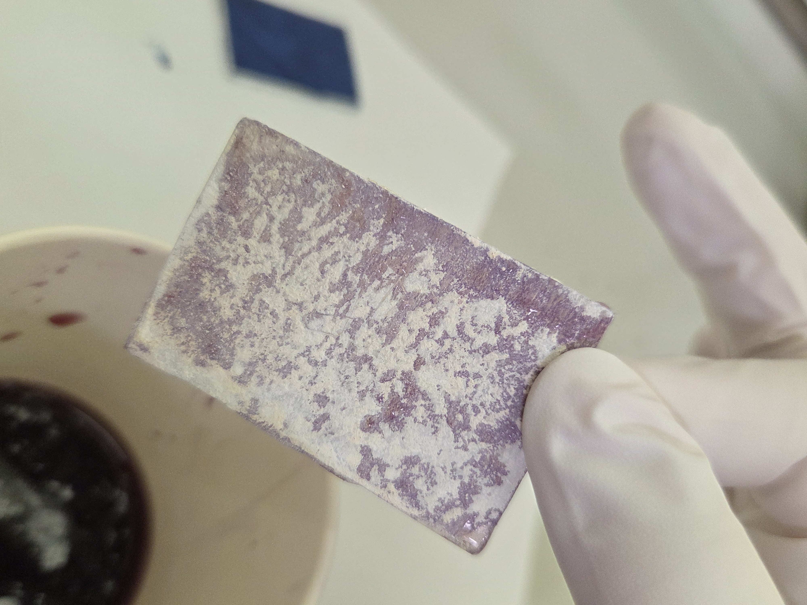
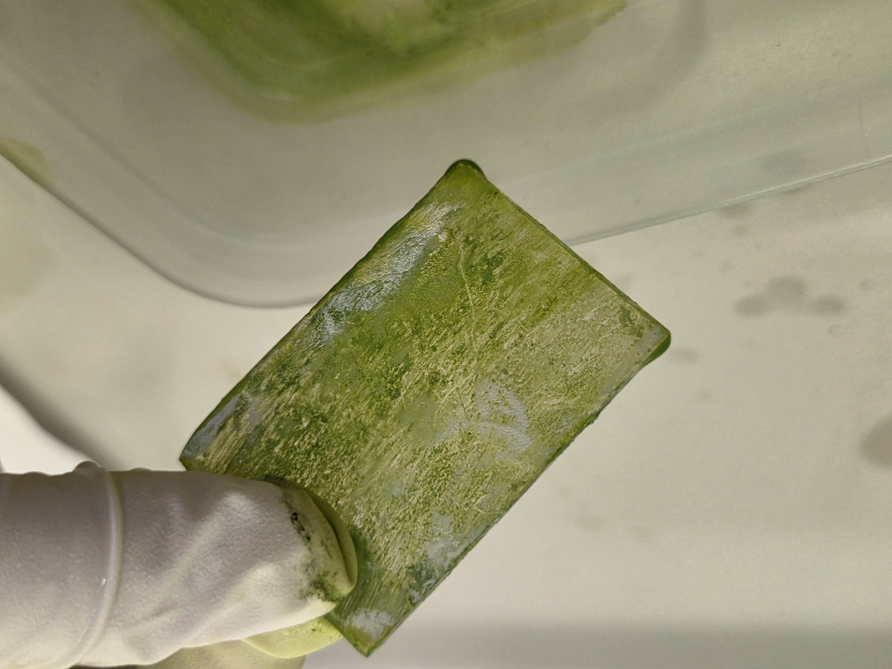
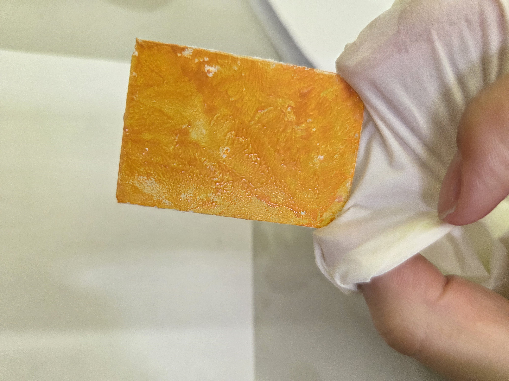
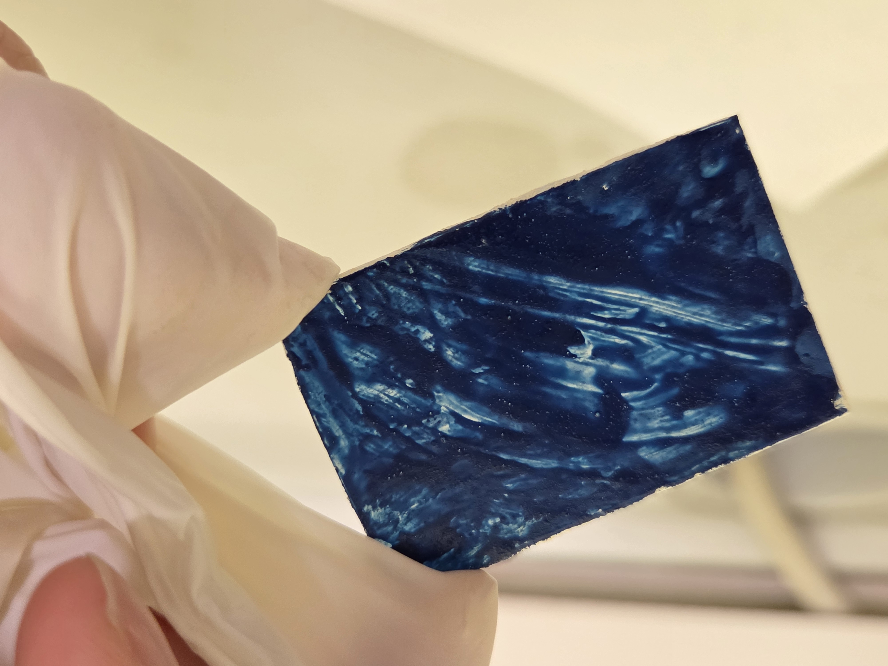
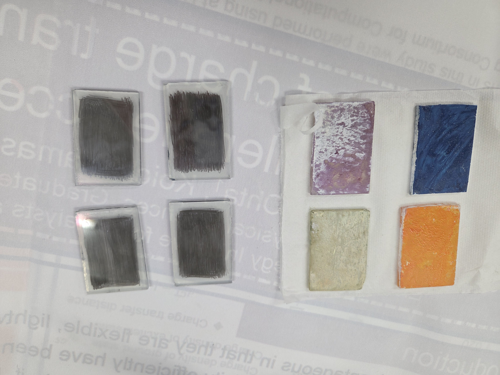
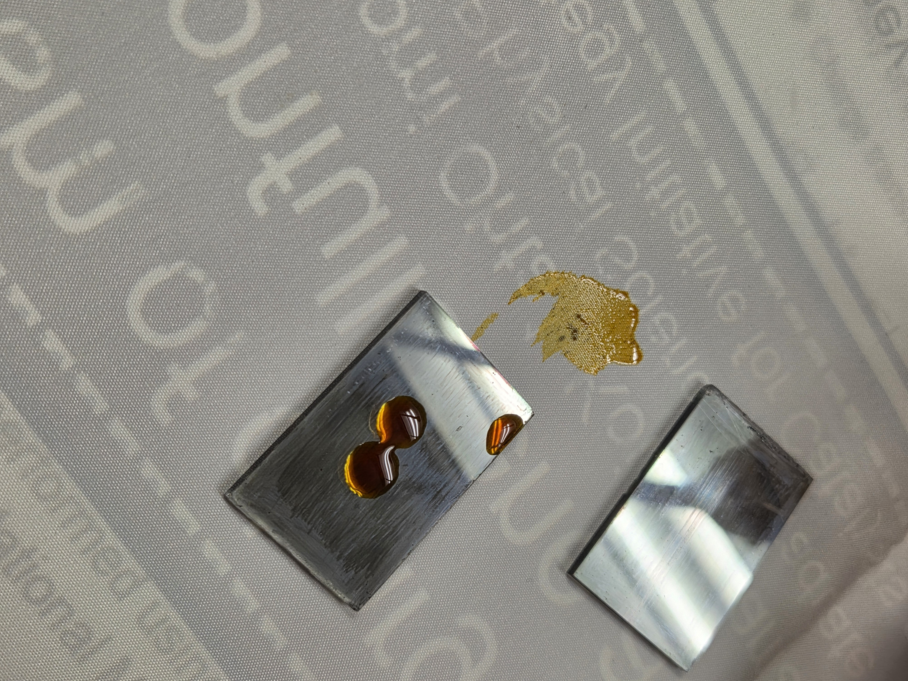
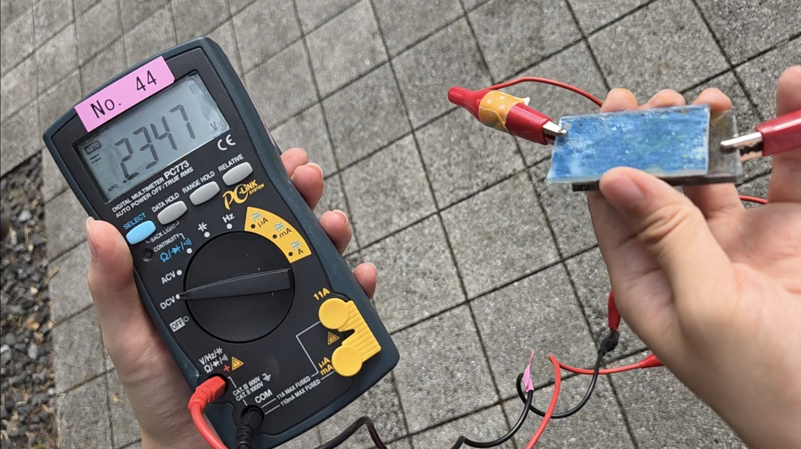

実験内容
〜うきうき実験〜
主な実験器具
- 導電性ガラス
- 酸化チタン粉末
- 酢酸
- ガラスカッター
- たこ焼き器
- デジタルマルチメータ
- 無水エタノール
- ヨウ素液
使用色素
- 赤：アントシアニン(ブルーベリー)
- 緑：クロロフィル(ほうれん草)
- 青：フタロシアニンブルー(絵具)
- 黄：イソインドリノン(絵具)
実験方法
- 導電性ガラスをガラスカッターで切断したものを8枚用意した。
- 1.のガラスの内、4枚の導電面を鉛筆で塗った。
- 酸化チタン粉末と酢酸を混合し、酸化チタンペーストを作成した。
- 酸化チタンペーストを1.のガラス4枚に塗布し乾燥させた後、焼成した。(写真1,2)
- ブルーベリーをすり潰してアントシアニン色素を抽出した。(写真3)
- ほうれん草を無水エタノールに漬け込んですり潰し、クロロフィル色素を抽出した。(写真4)
- 4.で作成したガラスに4つの色素をそれぞれ塗布・漬け込みし、乾燥させた。(写真5,6)
- 2.のガラスの導電面にヨウ素液を滴下し、7.のガラスと重ねて太陽電池を作成した。(写真8)
- 作成した太陽電池にデジタルマルチメータを接続し、電流Iと電圧Vを測定した。(写真9)
実験写真

写真1：実験方法4
酸化チタンペーストを塗布している様子。

写真2：実験方法4
上2枚：焼成後、下2枚：焼成前

写真3：実験方法5,7
アントシアニン色素が付着した様子。

写真4：実験方法6,7
クロロフィル色素が付着した様子。

写真5：実験方法7
イソインドリノン色素が付着した様子。

写真6：実験方法7
フタロシアニン色素が付着した様子。

写真7：実験方法7・完成
左：色素が付着したガラス、右：鉛筆で導電面を塗ったガラス。

写真8：実験方法8
電解質としてヨウ素液を滴下した様子。

写真9：実験方法9
太陽光下で実験をしている様子。(写真9)